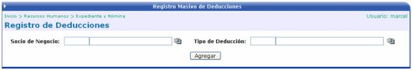
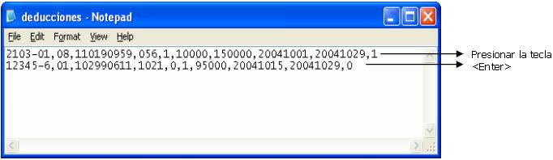

Las deducciones son los rebajos que se le aplican al salario de un empleado. Son únicos y exclusivamente de él. No son compartidos como en el caso de las Cargas Obrero - Patronales. Algunos ejemplos de deducciones son los embargos, los préstamos, etc.
Aquí se hace un registro de deducciones por lote, esto quiere decir que el usuario puede ingresar deducciones a varios empleados que tengan el mismo socio de negocio (persona o ente que emite el documento de deducción) y el mismo tipo de deducción.
Primero se debe de indicar el socio de negocio y el tipo de deducción.

Posterior a esto se deben de ingresar los siguientes datos:
Empleado: Seleccionar el funcionario al que se le va a aplicar la deducción.
Referencia: Puede ser el consecutivo de un a factura, o el número de un documento que haga alusión a la deducción.
Método: Este puede ser un valor (monto) o un porcentaje (%).
Valor: Monto del rebajo, lo que se le va a rebajar del salario al empleado.
Monto Préstamo: Monto Total o Principal del préstamo.
Fecha de Inicio: Indica cuando empieza a realizarse la deducción.
Fecha Fin: Indica cuando termina de efectuarse dicha deducción.
Controla Saldo: Si este check es activado, cuando el saldo de la deducción sea cero, o sea cuando se haya terminado de pagar, el sistema automáticamente desactiva dicho rebajo y no lo aplica más.
En la siguiente pantalla de lista de lotes de deducciones, esta el botón de el cual sirve para cargar masivamente deducciones, desde un archivo de texto.

Las instrucciones a seguir y el formato que tiene que tener el archivo de texto, se describen a continuación:

Pasos para la Importación:
Selección de Archivo: seleccione el archivo que desea cargar presionando el botón “Browse”

Importación: una vez seleccionado el archivo presione el botón de “Importar”

Resumen de Importación: al importar el archivo se mostrará información relacionada con la importación.
Revisión: una vez importado el archivo puede revisar la importación en la lista de lotes de deducciones.
Formato del Archivo de Importación:
El archivo debe ser un archivo plano y debe de tener las siguientes columnas:
1. Número del Socio de Negocio
2. Código de Tipo de Deducción
3. Identificación del empleado
4. Número de Referencia de la Deducción
5. Método de Cálculo (Porcentaje = 0, Monto = 1)
6. Valor o Monto
7. Monto del Préstamo
8. Fecha de Inicio, con el formato yyyymmdd
9. Fecha Final, con el formato yyyymmdd
10. Controla Saldo (No = 0, Si = 1)
Para separar las columnas se debe de utilizar una coma (,) y para el fin de línea se debe de presionar la tecla <Enter>
Un ejemplo del archivo a importar es el siguiente:

Para que las deducciones afecten el cálculo de la nómina es importante recordar que se debe de Aplicar el lote de deducciones.